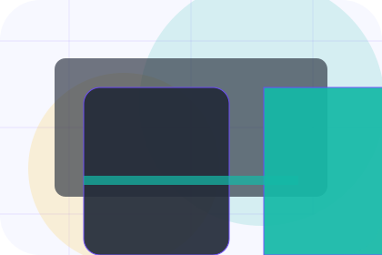
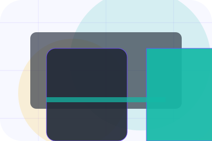
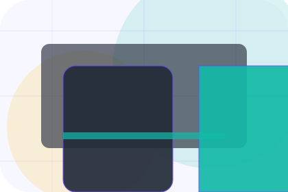
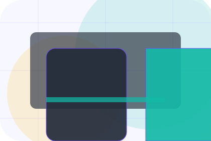
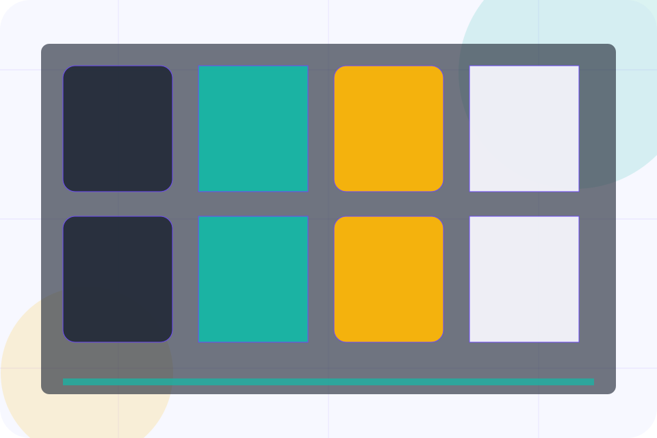
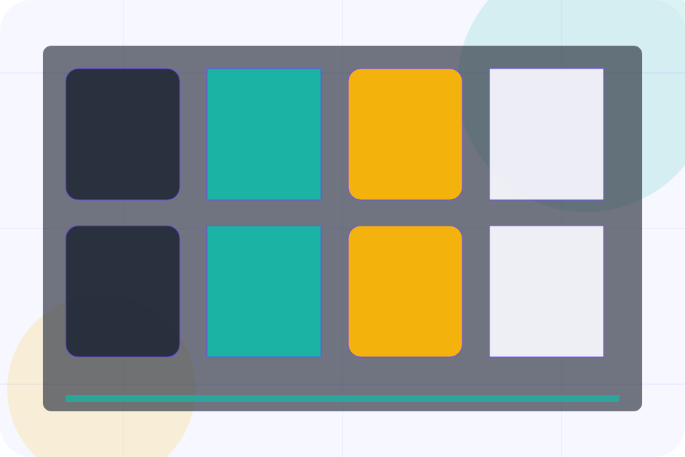
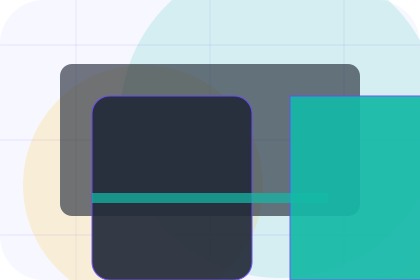
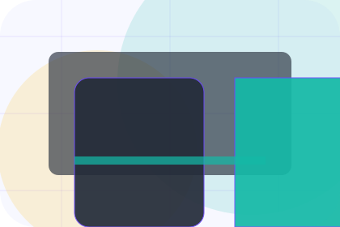

Context
Emotion gives the page a specific angle instead of repeating the navigation label.
Events
Clean event calendar system for emotion and confidence.
Home / 02
Vision adds hospitality context to the home route, using the clean event calendar system structure to support emotion and confidence before visitors choose a next step.
Vow uses rsvp event cards and focused copy to make the decision easier to scan, aligning the section with emotion and confidence rather than filling space.
Open StudioVow structures vision around context, judgment, and a clear next route so visitors can compare the block quickly before they enquire about a date.
Enquire DateHome / 03
Emotion adds hospitality context to the home route, using the clean event calendar system structure to support emotion and confidence before visitors choose a next step.
Vow uses rsvp event cards and focused copy to make the decision easier to scan, aligning the section with emotion and confidence rather than filling space.
Open ServicesEmotion gives the page a specific angle instead of repeating the navigation label.

The rsvp event cards show what to compare, what to avoid, and what matters most for events, weddings & experience production visitors.

The final cue points to a useful internal route so the section keeps the journey moving.
Home / 04
Promise defines the better state Vow is built to create, with enough detail to make the promise believable.
An events site with elegant event cards, date filters, host proof, and RSVP-style enquiry. The section grounds that direction in concrete benefits, visible tradeoffs, and a next route visitors can use when the promise feels relevant.
Open WeddingsPromise defines what becomes clearer, easier, or safer when Vow is the chosen route.
Home / 05
Services explains the practical scope, best-fit situations, and expected outcome so events visitors can compare options without decoding jargon.
The section keeps the offer concrete: what is included, who it is best for, what decision it supports, and which linked route gives the deeper detail.
Open ServicesWho should use services and when it belongs in the home journey.

The practical benefit visitors should expect after choosing this route.

Where to compare details, pricing, support, or contact options before committing.
Event card hero
Select the closest route and Vow keeps the next step, proof, and follow-up expectation aligned with emotion and confidence.
Home / 06
Portfolio adds hospitality context to the home route, using the clean event calendar system structure to support emotion and confidence before visitors choose a next step.
Vow uses rsvp event cards and focused copy to make the decision easier to scan, aligning the section with emotion and confidence rather than filling space.
Open PortfolioPortfolio gives the page a specific angle instead of repeating the navigation label.
The rsvp event cards show what to compare, what to avoid, and what matters most for events, weddings & experience production visitors.
The final cue points to a useful internal route so the section keeps the journey moving.


Home / 07
Process explains the operating sequence so visitors can see how the first request becomes a clear recommendation and follow-up.
The steps are written from the visitor side: what they do first, what Vow clarifies, what they receive, and how support continues.
Open PricingHow visitors begin this route and what detail is useful at the first step.
What Vow reviews, filters, or explains before recommending the next move.
What the visitor receives afterward, including support, proof, or a handoff to the next page.
Home / 08
Reviews converts customer proof into a useful buying signal: the problem, the experience, and what changed afterward.
Proof stays believable by focusing on situation, service experience, and practical change rather than vague praise or unsupported results.
Open Venues
What the visitor needed before choosing Vow, written with enough context to feel real.
Home / 09
Questions handles buying doubts directly so visitors can understand timing, fit, limits, and the safest next step.
Answers are short by design: enough to remove hesitation, not so much that the page turns into documentation before the visitor can act.
Open ContactQuestions gives the page a specific angle instead of repeating the navigation label.

The rsvp event cards show what to compare, what to avoid, and what matters most for events, weddings & experience production visitors.
The final cue points to a useful internal route so the section keeps the journey moving.
Vow starts with a focused intake so the recommendation matches the visitor's context, risk, timing, and readiness.
Each route explains inclusions, exclusions, documents, timing, and the decision points that affect final delivery.
The theme uses clean event calendar system, rsvp event cards, and event type selector, venue filter, package calculator rather than a shared template rhythm.
Event card hero
Select the closest route and Vow keeps the next step, proof, and follow-up expectation aligned with emotion and confidence.
Home / 10
Vow closes the home route with a clear action, a quick reminder of the value, and a low-friction way to enquire about a date.
Visitors who are ready can use the primary action. Visitors who are still comparing can scan the section links, proof, and support routes before they enquire about a date.
Enquire DateThe final block keeps the choice simple: act now, compare one more proof route, or send enough detail for a focused response.
Enquire Dateemotion and confidence
An events site with elegant event cards, date filters, host proof, and RSVP-style enquiry. Home ends with a direct path to enquire about a date, plus enough context for visitors who still need to compare.
 Enquire Date
Enquire Date